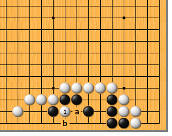
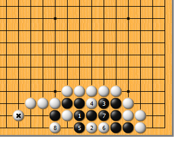
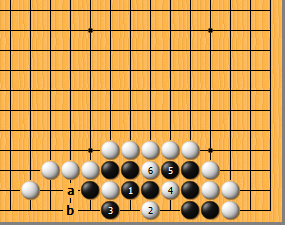
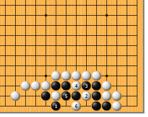
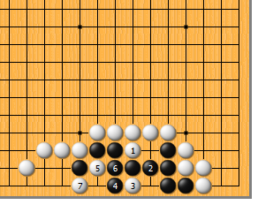
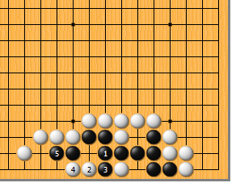

|  |  | |
| 图1 白1断，是投石问路的一手。黑究竟是应该a位应还是b位应呢？白做好了两手准备。
| 图2 黑如1位打，白2在急所靠，好手！黑3扩大眼位，白4挤，黑5时，白6打，先手破掉一眼后，再于8位套打，黑即死。白*子在此发挥了重大作用。
| |
|
 |
 | |
图3 黑1、白2交换后，黑3如马上提，能不能活呢？如此，白4挖、6断是手筋，倒扑吃黑。黑a长，白当然b位托，没有眼。 | 图4 黑1从这边抱吃如何？现在，白可2位单挖。黑3如打吃，白4断是双打，黑只好5位提，白再6位扳，既倒扑又破黑的眼，黑死。
| |
|
|
 | |
图5 黑1、白2交换后，黑3如单提，白4扳，冷静。黑5冲，白6断，结果不便，黑没有活一半的机会。
| 图6 白1挤，通常情况下是好手。黑2必粘，白3的靠，又是手筋。黑4如扳，白5、7套打，黑死。然而，黑4不是正确的应手，白把黑想简单了。
| |
|  | 您的高见 | |
图7 前图的黑4当然应该1位粘。白2点时，黑千万小心，一定要于3位遮断！白4爬，黑5也爬，一定有一眼。所以说，前图的白1不是正解。 |